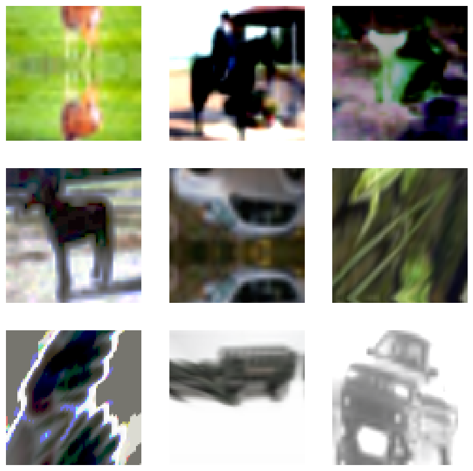
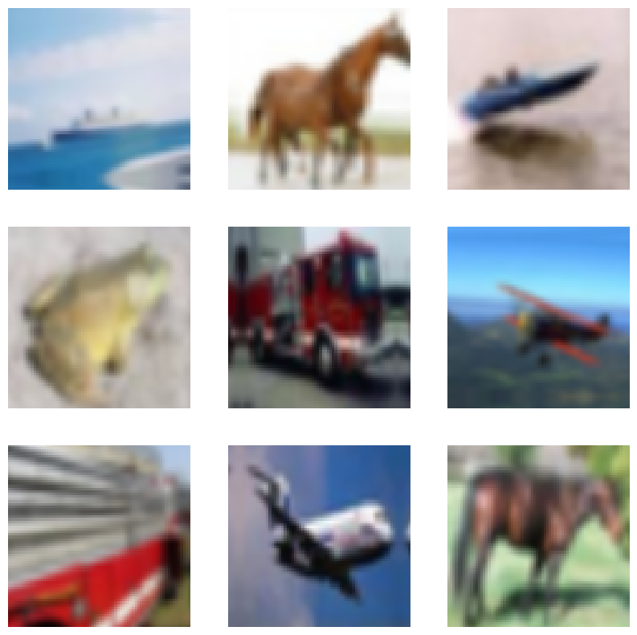

RandAugment for Image Classification for Improved Robustness
Authors: Sayak PaulSachin Prasad
Date created: 2021/03/13
Last modified: 2023/12/12
Description: RandAugment for training an image classification model with improved robustness.

Data augmentation is a very useful technique that can help to improve the translational invariance of convolutional neural networks (CNN). RandAugment is a stochastic data augmentation routine for vision data and was proposed in RandAugment: Practical automated data augmentation with a reduced search space. It is composed of strong augmentation transforms like color jitters, Gaussian blurs, saturations, etc. along with more traditional augmentation transforms such as random crops.
These parameters are tuned for a given dataset and a network architecture. The authors of RandAugment also provide pseudocode of RandAugment in the original paper (Figure 2).
Recently, it has been a key component of works like Noisy Student Training and Unsupervised Data Augmentation for Consistency Training. It has been also central to the success of EfficientNets.
pip install keras-cv
Imports & setup
import os
os.environ["KERAS_BACKEND"] = "tensorflow"
import keras
import keras_cv
from keras import ops
from keras import layers
import tensorflow as tf
import numpy as np
import matplotlib.pyplot as plt
import tensorflow_datasets as tfds
tfds.disable_progress_bar()
keras.utils.set_random_seed(42)
Load the CIFAR10 dataset
For this example, we will be using the CIFAR10 dataset.
(x_train, y_train), (x_test, y_test) = keras.datasets.cifar10.load_data()
print(f"Total training examples: {len(x_train)}")
print(f"Total test examples: {len(x_test)}")
Total training examples: 50000
Total test examples: 10000
Define hyperparameters
AUTO = tf.data.AUTOTUNE
BATCH_SIZE = 128
EPOCHS = 1
IMAGE_SIZE = 72
Initialize RandAugment object
Now, we will initialize a RandAugment object from the imgaug.augmenters module with
the parameters suggested by the RandAugment authors.
rand_augment = keras_cv.layers.RandAugment(
value_range=(0, 255), augmentations_per_image=3, magnitude=0.8
)
Create TensorFlow Dataset objects
train_ds_rand = (
tf.data.Dataset.from_tensor_slices((x_train, y_train))
.shuffle(BATCH_SIZE * 100)
.batch(BATCH_SIZE)
.map(
lambda x, y: (tf.image.resize(x, (IMAGE_SIZE, IMAGE_SIZE)), y),
num_parallel_calls=AUTO,
)
.map(
lambda x, y: (rand_augment(tf.cast(x, tf.uint8)), y),
num_parallel_calls=AUTO,
)
.prefetch(AUTO)
)
test_ds = (
tf.data.Dataset.from_tensor_slices((x_test, y_test))
.batch(BATCH_SIZE)
.map(
lambda x, y: (tf.image.resize(x, (IMAGE_SIZE, IMAGE_SIZE)), y),
num_parallel_calls=AUTO,
)
.prefetch(AUTO)
)
For comparison purposes, let's also define a simple augmentation pipeline consisting of random flips, random rotations, and random zoomings.
simple_aug = keras.Sequential(
[
layers.Resizing(IMAGE_SIZE, IMAGE_SIZE),
layers.RandomFlip("horizontal"),
layers.RandomRotation(factor=0.02),
layers.RandomZoom(height_factor=0.2, width_factor=0.2),
]
)
# Now, map the augmentation pipeline to our training dataset
train_ds_simple = (
tf.data.Dataset.from_tensor_slices((x_train, y_train))
.shuffle(BATCH_SIZE * 100)
.batch(BATCH_SIZE)
.map(lambda x, y: (simple_aug(x), y), num_parallel_calls=AUTO)
.prefetch(AUTO)
)
Visualize the dataset augmented with RandAugment
sample_images, _ = next(iter(train_ds_rand))
plt.figure(figsize=(10, 10))
for i, image in enumerate(sample_images[:9]):
ax = plt.subplot(3, 3, i + 1)
plt.imshow(image.numpy().astype("int"))
plt.axis("off")

You are encouraged to run the above code block a couple of times to see different variations.
Visualize the dataset augmented with simple_aug
sample_images, _ = next(iter(train_ds_simple))
plt.figure(figsize=(10, 10))
for i, image in enumerate(sample_images[:9]):
ax = plt.subplot(3, 3, i + 1)
plt.imshow(image.numpy().astype("int"))
plt.axis("off")

Define a model building utility function
Now, we define a CNN model that is based on the ResNet50V2 architecture. Also, notice that the network already has a rescaling layer inside it. This eliminates the need to do any separate preprocessing on our dataset and is specifically very useful for deployment purposes.
def get_training_model():
resnet50_v2 = keras.applications.ResNet50V2(
weights=None,
include_top=True,
input_shape=(IMAGE_SIZE, IMAGE_SIZE, 3),
classes=10,
)
model = keras.Sequential(
[
layers.Input((IMAGE_SIZE, IMAGE_SIZE, 3)),
layers.Rescaling(scale=1.0 / 127.5, offset=-1),
resnet50_v2,
]
)
return model
get_training_model().summary()
Model: "sequential_1"
┏━━━━━━━━━━━━━━━━━━━━━━━━━━━━━━━━━┳━━━━━━━━━━━━━━━━━━━━━━━━━━━┳━━━━━━━━━━━━┓ ┃ Layer (type) ┃ Output Shape ┃ Param # ┃ ┡━━━━━━━━━━━━━━━━━━━━━━━━━━━━━━━━━╇━━━━━━━━━━━━━━━━━━━━━━━━━━━╇━━━━━━━━━━━━┩ │ rescaling (Rescaling) │ (None, 72, 72, 3) │ 0 │ ├─────────────────────────────────┼───────────────────────────┼────────────┤ │ resnet50v2 (Functional) │ (None, 10) │ 23,585,290 │ └─────────────────────────────────┴───────────────────────────┴────────────┘
Total params: 23,585,290 (89.97 MB)
Trainable params: 23,539,850 (89.80 MB)
Non-trainable params: 45,440 (177.50 KB)
We will train this network on two different versions of our dataset:
- One augmented with RandAugment.
- Another one augmented with
simple_aug.
Since RandAugment is known to enhance the robustness of models to common perturbations
and corruptions, we will also evaluate our models on the CIFAR-10-C dataset, proposed in
Benchmarking Neural Network Robustness to Common Corruptions and Perturbations
by Hendrycks et al. The CIFAR-10-C dataset
consists of 19 different image corruptions and perturbations (for example speckle noise,
fog, Gaussian blur, etc.) that too at varying severity levels. For this example we will
be using the following configuration:
cifar10_corrupted/saturate_5.
The images from this configuration look like so:

In the interest of reproducibility, we serialize the initial random weights of our shallow network.
initial_model = get_training_model()
initial_model.save_weights("initial.weights.h5")
Train model with RandAugment
rand_aug_model = get_training_model()
rand_aug_model.load_weights("initial.weights.h5")
rand_aug_model.compile(
loss="sparse_categorical_crossentropy", optimizer="adam", metrics=["accuracy"]
)
rand_aug_model.fit(train_ds_rand, validation_data=test_ds, epochs=EPOCHS)
_, test_acc = rand_aug_model.evaluate(test_ds)
print("Test accuracy: {:.2f}%".format(test_acc * 100))
391/391 ━━━━━━━━━━━━━━━━━━━━ 1146s 3s/step - accuracy: 0.1677 - loss: 2.3232 - val_accuracy: 0.2818 - val_loss: 1.9966
79/79 ━━━━━━━━━━━━━━━━━━━━ 39s 489ms/step - accuracy: 0.2803 - loss: 2.0073
Test accuracy: 28.18%
Train model with simple_aug
simple_aug_model = get_training_model()
simple_aug_model.load_weights("initial.weights.h5")
simple_aug_model.compile(
loss="sparse_categorical_crossentropy", optimizer="adam", metrics=["accuracy"]
)
simple_aug_model.fit(train_ds_simple, validation_data=test_ds, epochs=EPOCHS)
_, test_acc = simple_aug_model.evaluate(test_ds)
print("Test accuracy: {:.2f}%".format(test_acc * 100))
391/391 ━━━━━━━━━━━━━━━━━━━━ 1132s 3s/step - accuracy: 0.3673 - loss: 1.7929 - val_accuracy: 0.4789 - val_loss: 1.4296
79/79 ━━━━━━━━━━━━━━━━━━━━ 39s 494ms/step - accuracy: 0.4762 - loss: 1.4368
Test accuracy: 47.89%
Load the CIFAR-10-C dataset and evaluate performance
# Load and prepare the CIFAR-10-C dataset
# (If it's not already downloaded, it takes ~10 minutes of time to download)
cifar_10_c = tfds.load("cifar10_corrupted/saturate_5", split="test", as_supervised=True)
cifar_10_c = cifar_10_c.batch(BATCH_SIZE).map(
lambda x, y: (tf.image.resize(x, (IMAGE_SIZE, IMAGE_SIZE)), y),
num_parallel_calls=AUTO,
)
# Evaluate `rand_aug_model`
_, test_acc = rand_aug_model.evaluate(cifar_10_c, verbose=0)
print(
"Accuracy with RandAugment on CIFAR-10-C (saturate_5): {:.2f}%".format(
test_acc * 100
)
)
# Evaluate `simple_aug_model`
_, test_acc = simple_aug_model.evaluate(cifar_10_c, verbose=0)
print(
"Accuracy with simple_aug on CIFAR-10-C (saturate_5): {:.2f}%".format(
test_acc * 100
)
)
Downloading and preparing dataset 2.72 GiB (download: 2.72 GiB, generated: Unknown size, total: 2.72 GiB) to /home/sachinprasad/tensorflow_datasets/cifar10_corrupted/saturate_5/1.0.0...
Dataset cifar10_corrupted downloaded and prepared to /home/sachinprasad/tensorflow_datasets/cifar10_corrupted/saturate_5/1.0.0. Subsequent calls will reuse this data.
Accuracy with RandAugment on CIFAR-10-C (saturate_5): 30.36%
Accuracy with simple_aug on CIFAR-10-C (saturate_5): 37.18%
For the purpose of this example, we trained the models for only a single epoch. On the
CIFAR-10-C dataset, the model with RandAugment can perform better with a higher accuracy
(for example, 76.64% in one experiment) compared with the model trained with simple_aug
(e.g., 64.80%). RandAugment can also help stabilize the training.
In the notebook, you may notice that, at the expense of increased training time with RandAugment, we are able to carve out far better performance on the CIFAR-10-C dataset. You can experiment on the other corruption and perturbation settings that come with the run the same CIFAR-10-C dataset and see if RandAugment helps.
You can also experiment with the different values of n and m in the RandAugment
object. In the original paper, the authors show
the impact of the individual augmentation transforms for a particular task and a range of
ablation studies. You are welcome to check them out.
RandAugment has shown great progress in improving the robustness of deep models for computer vision as shown in works like Noisy Student Training and FixMatch. This makes RandAugment quite a useful recipe for training different vision models.
You can use the trained model hosted on Hugging Face Hub and try the demo on Hugging Face Spaces.